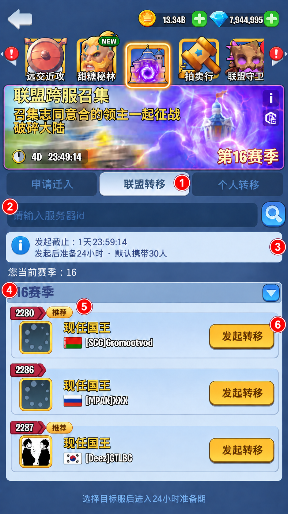
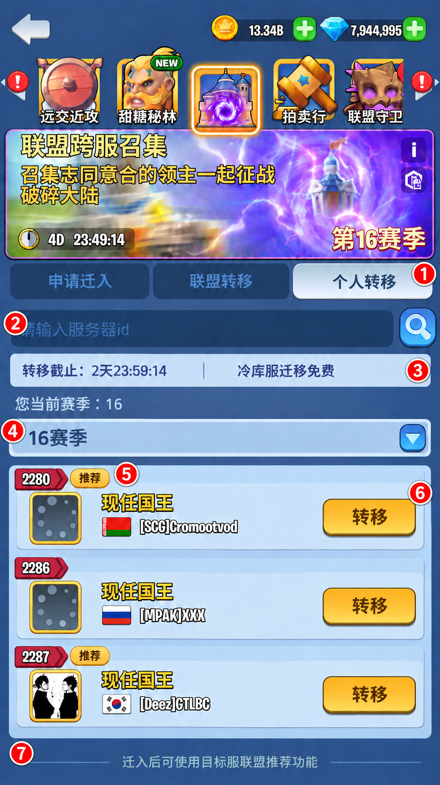

冷库服与召集活动调整 · 界面标注
依据主案及本轮已确认效果图整理，覆盖申请迁入、两类转移目标列表、联盟准备页/弹窗和成员管理。标注聚焦本次新增或变更区域，顶部活动资源等通用区域沿用现有界面。图中人数、服务器与倒计时为示例。
新建 key 以红色标注，已对客户端 Assets/Res/i18n/cn.tsv 查重；复用 key 保留原文。原有联盟资料、职级、动态名字和数字格式沿用原控件。标注图采用 ImageGen，坐标为视觉估计。
申请迁入：页签与推荐标识
冷库来源玩家的召集活动入口；申请迁入页签选中。
| - 三通道页签
- 冷库服显示申请迁入、联盟转移、个人转移，隐藏审批。迁出后恢复目标服常规页签。
- Activity_button_8901_02
- Transfer_Alliance_Btn
- ColdServer_personalTab
- 目标搜索
- 沿用服务器 ID 搜索；搜索结果仍受主案的同分组、当前或 +1 版本规则限制。
- Actv_8901_tips01
- 推荐标识
- 服务器组头和所属联盟条目继承同一个推荐结果。三项条件同时满足才显示；无标签仍可选择，不展示付费比例。
- ColdServer_recommended
- 联盟信息
- 保留现有联盟资料、语言、战力门槛及活跃时间；剩余名额展示当前冷库来源可用名额。服务端返回实际值，图中数字仅示意。
- 申请状态
- 无盟且满足资格时可申请；已有申请展示撤销和审核中。撤销后按原规则清理申请，玩家有需要手动重申；召集通道仍保留联盟审批。
- Activity_button_8901_02
- Activity_button_8901_03
- Activity_desc_8901_60
|
联盟转移：未发起
盟长进入联盟转移页签，当前联盟尚未发起转移。
 | - 页签状态
- 未发起时显示目标列表；发起成功立即切换为准备信息页。无盟者提示使用申请迁入或个人转移。
- Transfer_Alliance_Btn
- 搜索
- 复用目标服务器 ID 搜索。
- Actv_8901_tips01
- 发起时限与人数
- 显示距 D2 结束的剩余时间、24 小时准备期及默认携带人数预览。D2 截止后禁止新发起，已发起联盟继续准备。
- ColdServer_initiateDeadline
- ColdServer_initiateSummary
- 目标分组
- 展示当前赛季及目标赛季分组，支持收起展开；冷库可选目标无审批，不设置直接转入／需要审批／无法转入子页签。
- Server_Transfer_List_Tips_10
- ColdServer_seasonGroup
- 服务器条目与推荐
- 保留服务器 ID、国王头像、国旗和名字。推荐标签同申请迁入页的判定。
- Transfer_Present_King_Title
- ColdServer_recommended
- 发起操作
- 仅符合资格的盟长可发起。成功后显示目标服和本盟准备倒计时；失败保留选择列表并显示现有失败原因。
- ColdServer_initiate
- ColdServer_chooseHint
|
个人转移：目标列表
非盟长按主案资格使用个人转移；落地后通过目标服既有入口入盟。
 | - 个人页签
- 展示个人转移目标；盟长提示先转让盟长或使用联盟转移。
- ColdServer_personalTab
- 搜索
- 复用服务器 ID 搜索，结果遵守统一目标范围。
- Actv_8901_tips01
- 开放时间与费用
- 显示距 D3 结束的转移截止倒计时及免费说明；截止后停止转移操作。
- ColdServer_personalDeadline
- ColdServer_free
- 目标分组
- 复用赛季分组及折叠；仅显示符合范围的可选目标，无审批子页签。
- Server_Transfer_List_Tips_10
- ColdServer_seasonGroup
- 目标条目
- 保留国王资料，推荐结果按服务器展示。
- Transfer_Present_King_Title
- ColdServer_recommended
- 转移操作
- 按现有确认流程和执行校验提交；冷库特权不显示卷轴费用、库存或购买入口。成功按主案迁出，失败保留页面并显示原因。
- transfer_btn01
- 落地入盟提示
- 说明迁入后使用目标服既有联盟推荐功能；冷库服不提供这条入盟通道。
- ColdServer_localJoinHint
|
联盟转移：准备中
联盟成功发起后，页签内容替换为准备信息；关闭弹窗、切换页签或重进活动均可从此继续查看。
| - 持续准备状态
- 全盟在联盟转移页签看到当前准备信息；搜索、目标列表和发起入口被准备面板替换。D2 截止后也持续显示未结束的准备状态。
- Transfer_Alliance_Btn
- ColdServer_preparingTitle
- 联盟与迁移方向
- 显示本盟标识、来源服与目标服，以及准备中状态。
- ColdServer_preparing
- 本盟倒计时
- 从实际发起时间计算 24 小时；每次打开读取当前进度。到期切换执行状态并锁定名单操作。
- ColdServer_remainingLabel
- 执行说明
- 显示到期自动执行及免费迁移说明。
- ColdServer_autoTransfer
- ColdServer_free
- 名单摘要
- 显示携带/不携带人数和本人携带状态；名单变化后刷新。普通成员按主案显示确认加入或退出操作，图中为盟长视角。
- ColdServer_memberCounts
- ColdServer_selfState
- ColdServer_included
- ColdServer_excluded
- 取消转移
- 盟长可取消本次转移；关闭页面不等于取消。取消后恢复未发起状态，是否可重发按 D2 截止判定。
- Transfer_Cancel_Notice_Title
- Transfer_Cancel_Notice_Desc
- 成员列表入口
- 打开转移列表管理其他成员；返回后仍保留准备信息。普通成员不提供盟长管理权限。
- Alliance_server_transfer_button
- ColdServer_manageHint
|
联盟转移：准备弹窗
发起或准备期登录时展示当前迁移信息；关闭后可通过联盟转移页签重新查看。
| - 标题与关闭
- 关闭只关闭弹窗；本次联盟转移继续准备。
- Transfer_Alliance_Notice_Title
- 联盟与执行说明
- 展示本盟标识、自动执行和免费说明。
- ColdServer_autoTransfer
- ColdServer_free
- 目标及倒计时
- 展示迁移方向与实时准备倒计时，与准备页读取同一状态。
- ColdServer_preparing
- 成员摘要
- 与准备页同步携带人数和本人状态；图中为盟长。
- ColdServer_memberCounts
- ColdServer_selfState
- ColdServer_included
- ColdServer_excluded
- ColdServer_manageHint
- 取消操作
- 使用准备页相同的取消权限、确认与时限规则。
- Transfer_Cancel_Notice_Title
- Transfer_Cancel_Notice_Desc
- 列表入口
- 打开成员管理列表；回到弹窗或页签均保持最新准备状态。
- Alliance_server_transfer_button
|
转移列表：盟长视角
从准备页或弹窗进入，用于查看分组成员并管理携带名单。
| - 标题与关闭
- 从准备弹窗或联盟转移准备页进入。关闭只收起列表，保留准备状态；再次进入读取最新名单。
- Alliance_server_transfer_button
- 目标与准备摘要
- 展示目标服、当前准备剩余时间及携带/不携带人数；操作成功后刷新，失败按现有提示处理，不提前改变人数。
- ColdServer_target
- ColdServer_remaining
- ColdServer_memberCounts
- 成员分组与本人
- 携带成员按联盟职级分组；不携带单独分组。组头显示人数并支持折叠。成员展示头像、昵称和战力；本人显示身份与携带状态。
- ColdServer_excluded
- ColdServer_included
- Alliance_server_transfer_tips2
- UNION_power
- 移除成员
- 仅盟长在准备中管理其他成员；本人无移除按钮。点击后使用现有二次确认交互，确认文案改为只说明移出携带名单，不使用旧提示中“无法再次申请转移”的表述。
- UNION_member_remove
- ColdServer_removeConfirm
- LC_MENU_cancel_cap
- LC_MENU_confirm_cap
- 恢复携带
- 盟长可将不携带成员恢复到名单，沿用名额校验；成功后刷新分组、状态和人数。
- ColdServer_restore
- ColdServer_removed
- 操作说明与执行状态
- 说明移除名单不会立即退盟。准备结束后名单锁定，移除/恢复停止响应，按主案自动执行；此处为提示条，不能点击执行转移。
- ColdServer_removeHint
- ColdServer_lockHint
|
本地化文本汇总
复用 key（17 条）
| 枚举 KEY | 中文内容 | 占位符传参说明 |
|---|
| Activity_button_8901_02 | 申请迁入 | 无 |
| Transfer_Alliance_Btn | 联盟转移 | 无 |
| Actv_8901_tips01 | 请输入服务器id | 无 |
| Activity_button_8901_03 | 撤销 | 无 |
| Activity_desc_8901_60 | 审核中 | 无 |
| Server_Transfer_List_Tips_10 | 您当前赛季：{0} | {0}=玩家当前赛季编号 |
| Transfer_Present_King_Title | 现任国王 | 无 |
| transfer_btn01 | 转移 | 无 |
| Transfer_Cancel_Notice_Title | 取消转移 | 无 |
| Transfer_Cancel_Notice_Desc | 是否取消转移？ | 无 |
| Alliance_server_transfer_button | 转移列表 | 无 |
| Transfer_Alliance_Notice_Title | 联盟转移 | 无 |
| 枚举 KEY | 中文内容 | 占位符传参说明 |
|---|
| Alliance_server_transfer_tips2 | 自己 | 无 |
| UNION_power | 战力：{0} | {0}=成员战力；沿用既有数字格式 |
| UNION_member_remove | 移除 | 无 |
| LC_MENU_cancel_cap | 取消 | 无 |
| LC_MENU_confirm_cap | 确认 | 无 |
新增 key（26 条）
| 枚举 KEY | 中文内容 | 占位符传参说明 |
|---|
| ColdServer_personalTab | 个人转移 | 无 |
| ColdServer_recommended | 推荐 | 无 |
| ColdServer_initiateDeadline | 发起截止：{0} | {0}=距 D2 结束的剩余时长，如 1天23:59:14 |
| ColdServer_initiateSummary | 发起后准备{0}小时 · 默认携带{1}人 | {0}=准备期小时数，当前24；{1}=本次默认携带人数预览 |
| ColdServer_seasonGroup | {0}赛季 | {0}=目标服务器赛季编号 |
| ColdServer_initiate | 发起转移 | 无 |
| ColdServer_chooseHint | 选择目标服后进入{0}小时准备期 | {0}=准备期小时数，当前24 |
| ColdServer_personalDeadline | 转移截止：{0} | {0}=距 D3 结束的剩余时长 |
| ColdServer_free | 冷库服迁移免费 | 无 |
| ColdServer_localJoinHint | 迁入后可使用目标服联盟推荐功能 | 无 |
| ColdServer_preparingTitle | 联盟转移准备中 | 无 |
| ColdServer_preparing | 准备中 | 无 |
| 枚举 KEY | 中文内容 | 占位符传参说明 |
|---|
| ColdServer_remainingLabel | 准备剩余时间 | 无；数字倒计时沿用现有格式 |
| ColdServer_autoTransfer | 准备结束后自动执行联盟转移 | 无 |
| ColdServer_memberCounts | 已携带 {0} 人 · 不携带 {1} 人 | {0}=当前携带人数；{1}=当前不携带人数 |
| ColdServer_selfState | 本人状态：{0} | {0}=本人的携带状态本地化文本 |
| ColdServer_included | 已携带 | 无 |
| ColdServer_excluded | 不携带 | 无 |
| ColdServer_manageHint | 可在转移列表中管理其他成员 | 无；盟长视角显示 |
| ColdServer_target | 目标服：{0} | {0}=本次目标服务器 ID |
| ColdServer_remaining | 准备剩余：{0} | {0}=本盟准备剩余时长，如 23:59:56 |
| ColdServer_removeConfirm | 是否将该成员移出本次携带名单？移除不会立即退盟，准备结束前可由盟长恢复携带。 | 无 |
| ColdServer_restore | 恢复携带 | 无 |
| ColdServer_removed | 已移出名单 | 无 |
| 枚举 KEY | 中文内容 | 占位符传参说明 |
|---|
| ColdServer_removeHint | 移除仅调整携带名单，不会立即退盟 | 无 |
| ColdServer_lockHint | 准备结束后锁定名单并自动转移 | 无 |
{kind=link}
{kind=link}
{kind=link}
{kind=link}
{kind=link}
{kind=link}